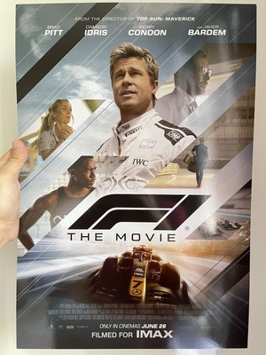

Gênero:Ação • Duração:2h39min • Classificação:12 anos
Em F1, um piloto veterano de Fórmula 1 volta da aposentadoria para ser o mentor de seu jovem colega de equipe. No filme produzido pelo heptacampeão de Fórmula 1 Lewis Hamilton, depois de abandonar as pistas, o lendário piloto Sonny Hayes (Brad Pitt) é convencido a voltar a correr para apoiar Joshua Pearce (Damson Idris), o jovem novato da escuderia fictícia ApexGP. Disposto a todos os riscos, Sonny monta uma estratégia para fazer a equipe se tornar vitoriosa, para isso ele precisará do apoio da comissão técnica e de pessoas influentes do esporte, mostrando que a corrida vai muito além das curvas dos autódromos. O longa conta com a participação dos pilotos reais da F1 e foi gravado durante as corridas do GP da Inglaterra.